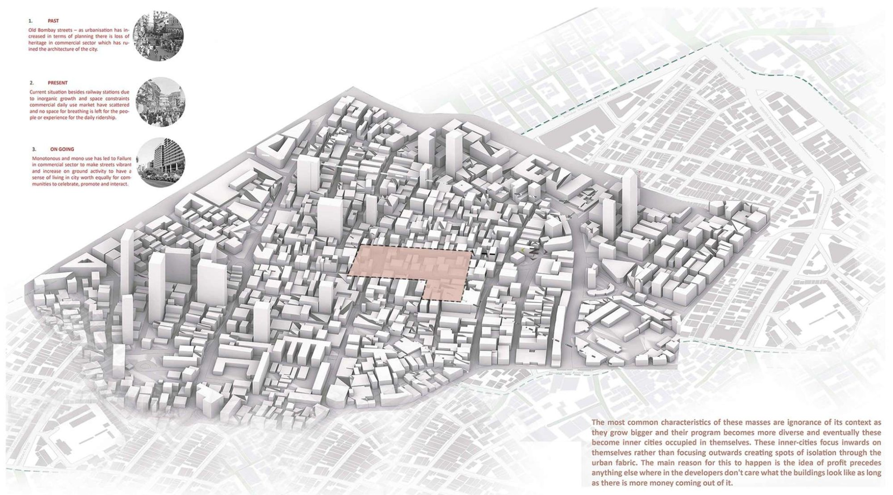
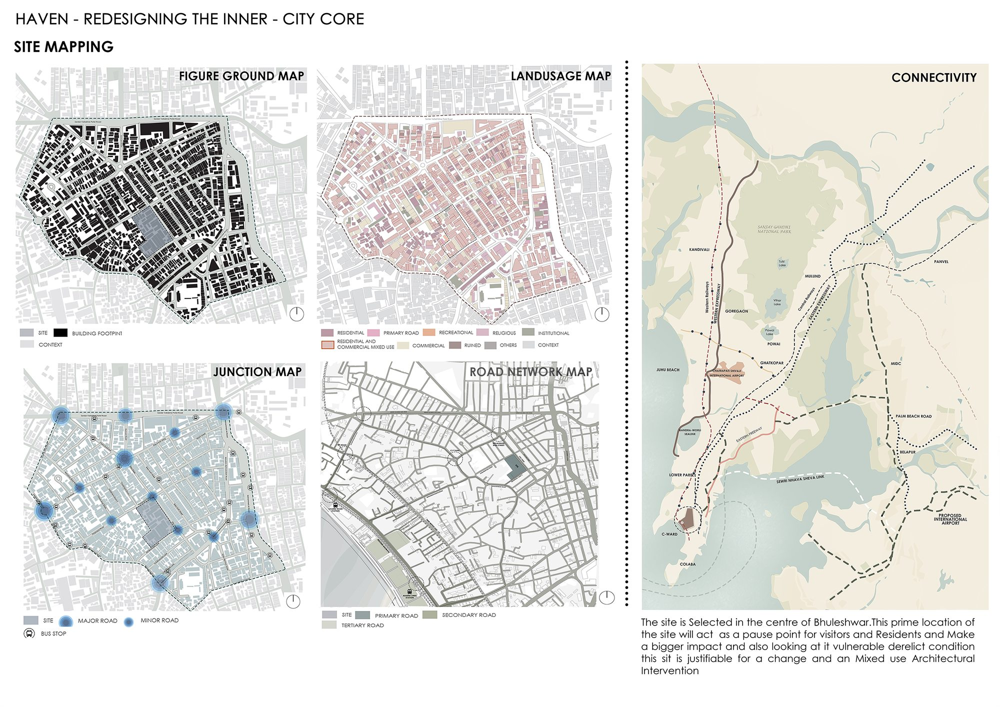
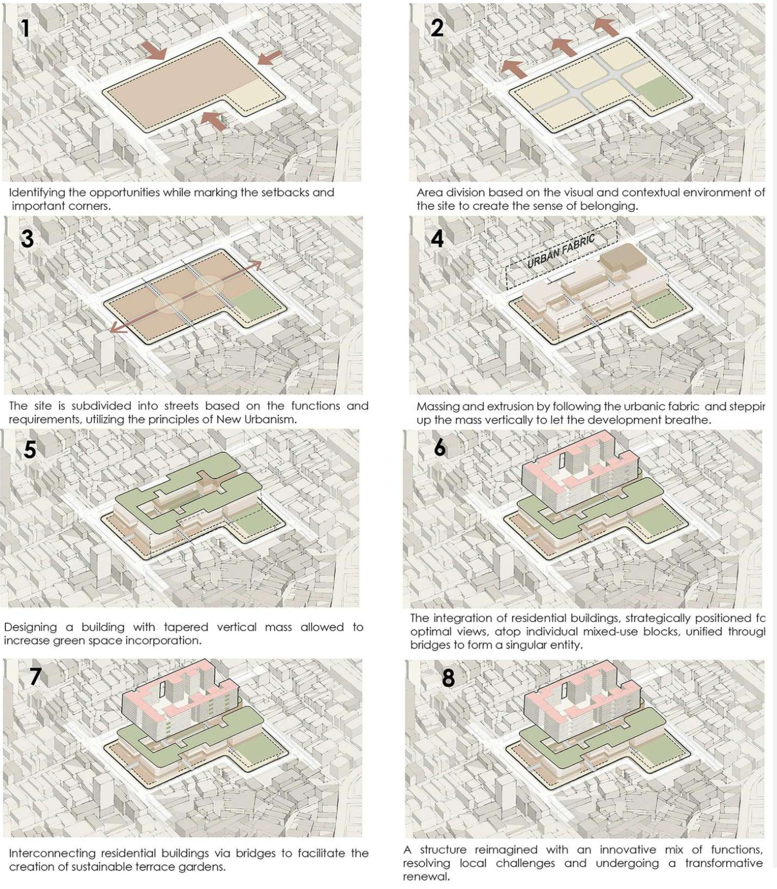
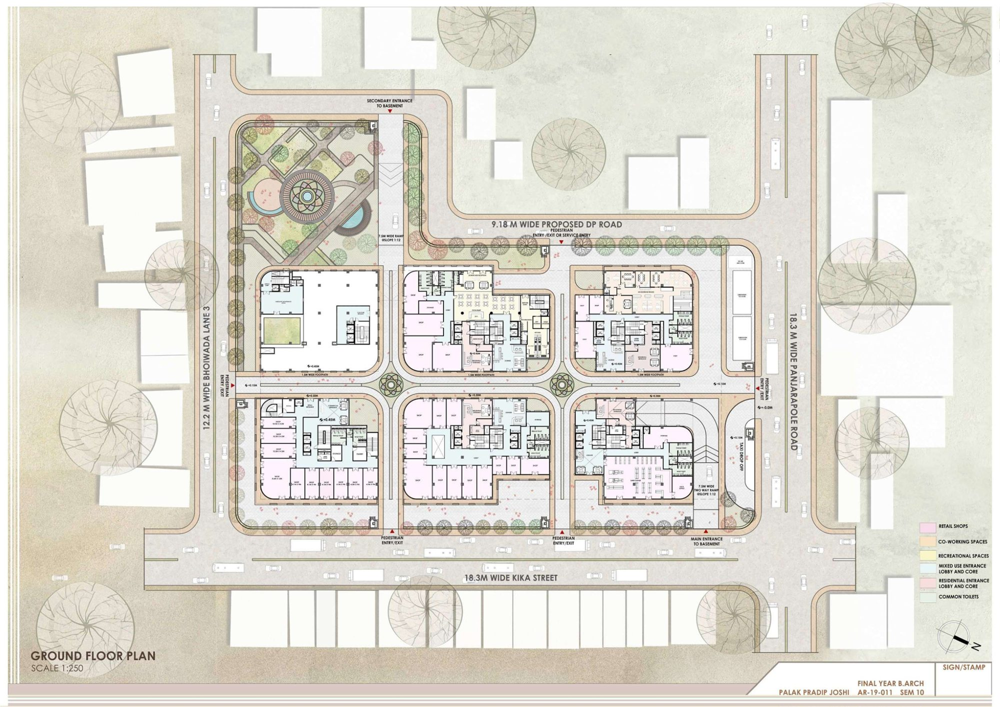
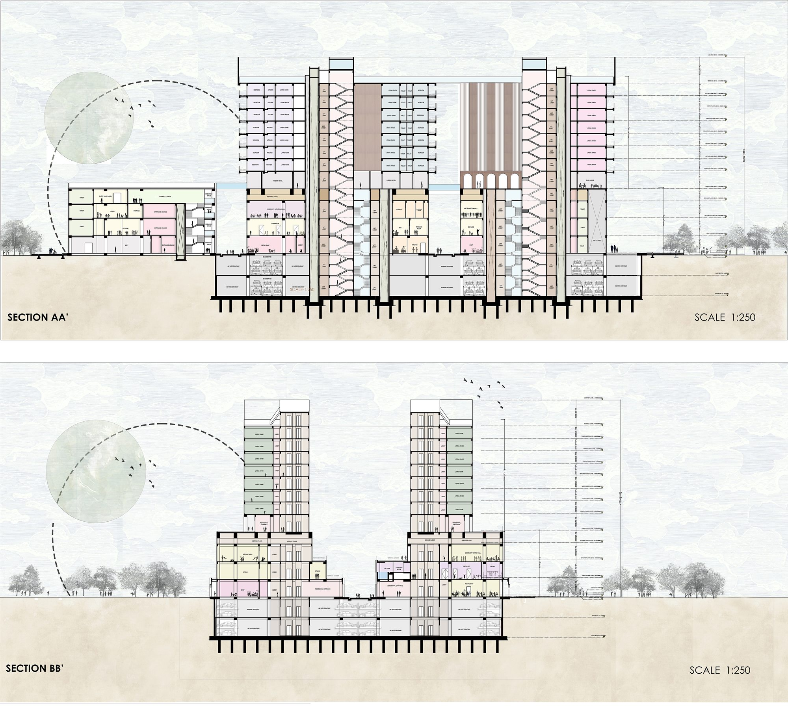
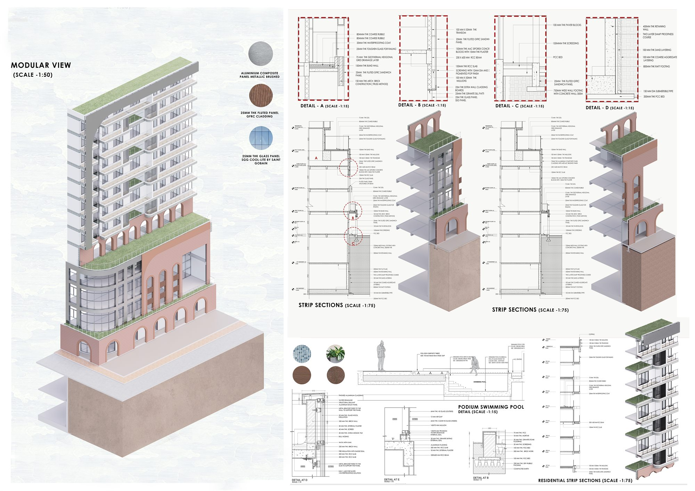

Work / 04 · Thesis
Haven
A hybrid architectural vision for an enhanced neighbourhood, redesigning the inner-city core of Bhuleshwar, Mumbai.

- Type
- Undergraduate thesis, Semester 10
- Year
- 2024
- Location
- Kika Street, Bhuleshwar, Mumbai
- Programme
- Mixed use: housing, retail, co-working, recreation
- Site area
- 13,575 m²
- Built-up area
- 35,000 m²
- Scope
- Urban analysis, master planning, architecture, façade and construction detailing
- Recognition
- First position, design dissertation
Bhuleshwar is one of Mumbai's oldest market precincts. It is dense, layered and still economically alive, but increasingly dilapidated. Around it, redevelopment has produced inward-looking towers: buildings that grow larger and more mixed, yet turn their backs on the street and leave pockets of isolation in the city.
Haven tests the opposite approach. Planned on the principles of New Urbanism, it is a mixed-use block that returns housing, shops, workspaces, community spaces and public gardens to the heart of the precinct. It is designed to stand out as a new piece of city while respecting the grain, scale and character of what surrounds it.
“Do you want the existing character of the city to influence new development, or do you want new development to redefine the character of the city?” The question the thesis set out to answer
01Reading the site
A study of how Bhuleshwar formed, from bazaars, temples and dharamshalas for migrants to chawls, rent control and today's redevelopment, was set alongside figure-ground, land-use, junction and road-network maps. The site sits at the centre of the precinct, where a new public anchor could act as a pause point for residents and visitors alike.




02Form development
Setbacks and important corners were marked first, then the site was divided into streets by function. Masses step up from the street edge so the development can breathe; towers taper to free space for greenery. Residential blocks sit on mixed-use podiums and are tied together by bridges that carry terrace gardens, so the scheme reads as one connected structure rather than a collection of buildings.



03Plans, sections and elevations
Six blocks are arranged around a cross of pedestrian streets, with retail and co-working at ground level, separate lobbies for the residential and mixed-use programmes, a public garden on the north corner and two levels of basement parking. The elevations reinterpret the brick arcades of old Bombay in a contemporary language.




04Building it
The façade was resolved as a kit of parts (GFRC fluted cladding, DGU glazing on a transom-mullion system, ACP panels and textured stucco) and tested in strip sections at 1:75 and details at 1:15, including the podium swimming pool. Passive strategies such as green roofs, solar panels and shading, reflective and insulated surfaces, natural ventilation and daylight reduce the building's reliance on mechanical systems.



05Vantage
The elevations were shaped by the site analysis, comparative studies and material exploration. Traditional elements were brought into a contemporary design to set out a fresh architectural language for the precinct.